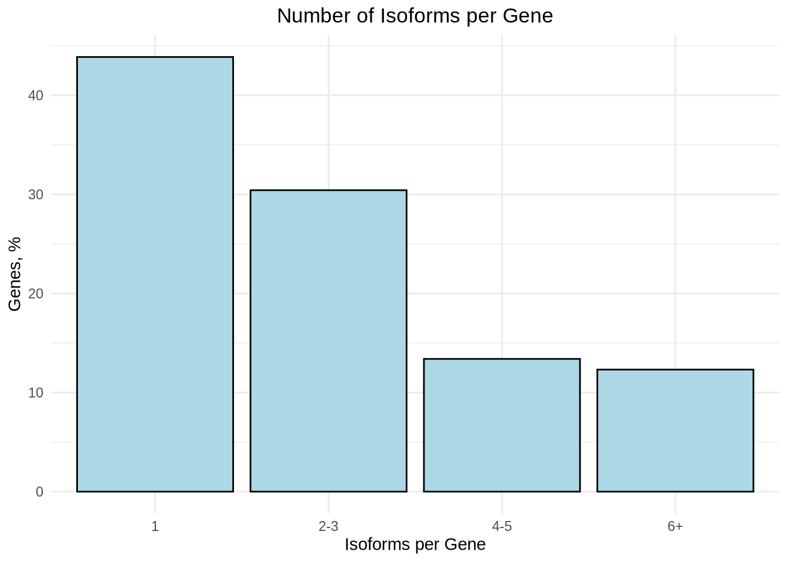
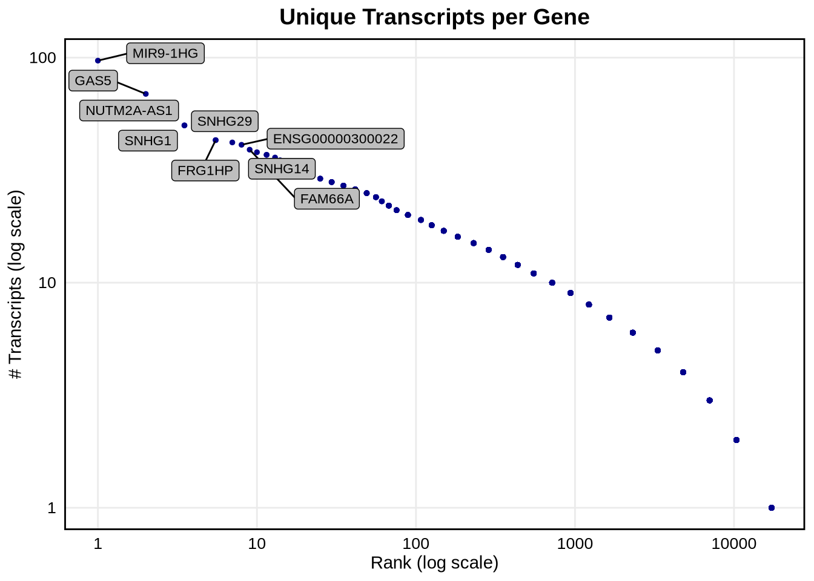
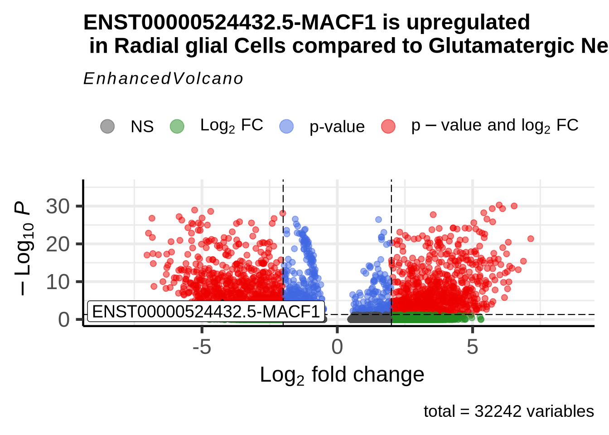

Chapter 6 Exploring isoforms of interest
One of the most powerful aspects of long-read single-cell sequencing is its ability to profile isoform-specific information at single-cell resolution. This capability opens up numerous avenues for analysis. In our lab we are interested in exploring the role of RNA isofroms in neuronal differentiation. There are many examples in the literate of isofroms regurgitating this process. We will cover some very general analysis with this focus in mind. For users of long-read single-cell tools who are interested in exploring additional biological questions, we encourage you to share your suggestions and we can expand this section to include analytical approaches that may cover a wider range of applications.
6.1 Isoforms expressed per gene
With long-read single-cell data, we have the ability to analyze all the isoforms expressed by a given gene. In our data we can see that most genes express more than one isoform.
Code
#lets aggeragte the expresstion data by cell type
counts <- AggregateExpression(
seu_obj,
assays = "iso",
return.seurat = FALSE,
group.by = "sctype_db"
)
as.data.frame(counts) -> df
row.names(df) -> df$gene
#split transcript ids into gene and transcript id
df <- df %>% separate(gene, into = c("transcript_id", "gene_id"), sep = "-", extra = "merge")
#df$transcript_id <- sub("\\..*", "", df$transcript_id)
# 2. Count the number of isoforms per gene
isoform_count_per_gene <- df %>%
group_by(gene_id) %>%
summarise(n_isoforms = n_distinct(transcript_id))
# 3. count isforms per category
isoform_count_per_gene <- isoform_count_per_gene %>%
mutate(isoform_category = case_when(
n_isoforms == 1 ~ "1",
n_isoforms >= 2 & n_isoforms <= 3 ~ "2-3",
n_isoforms >= 4 & n_isoforms <= 5 ~ "4-5",
n_isoforms >= 6 ~ "6+"
))
# 4. Calculate the percentage of genes in each bin
isoform_count_summary <- isoform_count_per_gene %>%
count(isoform_category) %>%
mutate(percent = (n / sum(n)) * 100)
ggplot(isoform_count_summary, aes(x = isoform_category, y = percent)) +
geom_bar(stat = "identity", fill = "lightblue", color = "black") +
labs(title = "Number of Isoforms per Gene",
x = "Isoforms per Gene",
y = "Genes, %") +
theme_minimal() +
theme(legend.position = "none",
plot.title = element_text(hjust = 0.5))
6.2 Top 10 Genes with Most Isoforms
We can see that about 45% of genes express a single isoform, however there are some genes like MIR9-1HG that have alot of unique isofroms, 97 in fact. The top 10 genes with the most isofroms are listed bellow.
Code
# Genes ranked by the number of transcript isoforms detected across all samples
gene_transcript_counts <- df %>%
group_by(gene_id) %>%
summarise(unique_transcripts = n_distinct(transcript_id)) %>%
arrange(desc(unique_transcripts))
# Select the top 10 genes based on unique transcript counts
top10 <- gene_transcript_counts %>% top_n(10, unique_transcripts)
top10## # A tibble: 10 × 2
## gene_id unique_transcripts
## <chr> <int>
## 1 MIR9-1HG 97
## 2 GAS5 69
## 3 NUTM2A-AS1 50
## 4 SNHG1 50
## 5 FRG1HP 43
## 6 TMEM161B-DT 43
## 7 SNHG29 42
## 8 ENSG00000300022 41
## 9 FAM66A 39
## 10 SNHG14 38We can also plot unique transcripts per gene on a log scale showing that the number of isofroms per gene varies alot across out data.
Code
# Plot ranked genes by unique "BambuTx" transcript count
ggplot(gene_transcript_counts, aes(x = rank(desc(unique_transcripts)), y = unique_transcripts)) +
geom_point(color = "darkblue", size = 1) + # Points for each gene
# Log scale for both axes
scale_x_log10() +
scale_y_log10() +
# Title and labels
labs(
title = "Unique Transcripts per Gene",
x = "Rank (log scale)",
y = "# Transcripts (log scale)"
) +
# Highlight and label the top 10 genes with gray background and black border around the text
geom_label_repel(
data = gene_transcript_counts %>% filter(gene_id %in% top10$gene_id),
aes(label = gene_id),
fill = "gray", # Gray background for the label
color = "black", # Black text color
label.size = 0.25, # Border thickness around the label
label.r = unit(0.15, "lines"), # Border radius (rounded corners)
size = 3,
box.padding = 0.2,
max.overlaps = 14
) +
# Minimal theme and additional styling
theme_minimal() +
theme(
plot.title = element_text(size = 14, face = "bold", hjust = 0.5), # Centered title
axis.text = element_text(size = 10, color = "black"), # Black axis tick labels
axis.title = element_text(color = "black"), # Black axis titles
panel.grid.minor = element_blank(),
panel.border = element_rect(color = "black", fill = NA, linewidth = 1) # Black border around the graph
)
6.3 Exploring MACF1 isoforms
We are interested in isoforms that regulate neuronal differentiation, we can look at some genes of interest. Lets look at gene MACF1. This gene is know to…. [ref]. The gene seems to play some important role in neural migration which is not fully understood yet. First lets try and visualize the expression of these isofroms on a UMAP to see if we can uncover anything interesting. MACF1 has 35 expressed isofroms so lets only plot the top 12 most highly expressed.
Code
features <- rownames(filt_seurat_object@assays$iso@features)
# Define the gene of interest
gene <- "MACF1"
# Access the data matrix for the 'iso' assay
expression_matrix <- GetAssayData(filt_seurat_object, assay = "iso", slot = "data")
# Filter features containing the gene name
matching_features <- grep(paste0("(^|-|\\b)", gene, "($|\\b)"), rownames(expression_matrix), value = TRUE)
# Subset the expression matrix to include only the matching features
subset_expression <- expression_matrix[matching_features, , drop = FALSE]
# Calculate the total expression for each matching feature
total_expression <- Matrix::rowSums(subset_expression)
# Rank features by average expression
top_features <- names(sort(total_expression, decreasing = TRUE))
# Print the ranked features (optional)
print(data.frame(Feature = top_features, Expression = total_expression[top_features]))## Feature Expression
## ENST00000361689.7-MACF1 ENST00000361689.7-MACF1 143.862407
## ENST00000289893.8-MACF1 ENST00000289893.8-MACF1 62.133601
## ENST00000372925.6-MACF1 ENST00000372925.6-MACF1 45.932634
## ENST00000372915.8-MACF1 ENST00000372915.8-MACF1 45.461522
## ENST00000567887.5-MACF1 ENST00000567887.5-MACF1 45.092944
## ENST00000686657.1-MACF1 ENST00000686657.1-MACF1 44.609476
## ENST00000564288.6-MACF1 ENST00000564288.6-MACF1 40.689721
## ENST00000524432.5-MACF1 ENST00000524432.5-MACF1 27.310250
## ENST00000686687.1-MACF1 ENST00000686687.1-MACF1 19.939477
## ENST00000497964.1-MACF1 ENST00000497964.1-MACF1 17.945311
## ENST00000530275.3-MACF1 ENST00000530275.3-MACF1 16.728830
## ENST00000691623.1-MACF1 ENST00000691623.1-MACF1 14.286232
## ENST00000602528.2-MACF1 ENST00000602528.2-MACF1 13.942571
## ENST00000687271.1-MACF1 ENST00000687271.1-MACF1 12.934634
## ENST00000476350.1-MACF1 ENST00000476350.1-MACF1 12.210176
## ENST00000496804.5-MACF1 ENST00000496804.5-MACF1 12.181141
## ENST00000686067.1-MACF1 ENST00000686067.1-MACF1 10.238947
## ENST00000690080.1-MACF1 ENST00000690080.1-MACF1 8.279051
## ENST00000497807.1-MACF1 ENST00000497807.1-MACF1 8.021857
## ENST00000693209.1-MACF1 ENST00000693209.1-MACF1 7.429056
## ENST00000693392.1-MACF1 ENST00000693392.1-MACF1 7.317640
## ENST00000472385.2-MACF1 ENST00000472385.2-MACF1 7.075353
## ENST00000602421.5-MACF1 ENST00000602421.5-MACF1 6.698620
## ENST00000686260.1-MACF1 ENST00000686260.1-MACF1 6.297806
## ENST00000688426.1-MACF1 ENST00000688426.1-MACF1 6.232290
## ENST00000687997.1-MACF1 ENST00000687997.1-MACF1 6.056226
## ENST00000690939.1-MACF1 ENST00000690939.1-MACF1 5.445340
## ENST00000683517.1-MACF1 ENST00000683517.1-MACF1 3.526815
## ENST00000442046.5-MACF1 ENST00000442046.5-MACF1 3.018726
## ENST00000689911.1-MACF1 ENST00000689911.1-MACF1 2.657853
## ENST00000484793.5-MACF1 ENST00000484793.5-MACF1 2.181164
## ENST00000467673.5-MACF1 ENST00000467673.5-MACF1 2.131094
## ENST00000686941.1-MACF1 ENST00000686941.1-MACF1 1.058887
## ENST00000672812.1-MACF1 ENST00000672812.1-MACF1 1.055652
## ENST00000528611.1-MACF1 ENST00000528611.1-MACF1 0.401423Code
options(repr.plot.width=12, repr.plot.height=12)
# Plot the top 16 features in descending order of their average expression
plots <- FeaturePlot(
filt_seurat_object,
features = head(top_features, 12),
reduction = "umap",
order = TRUE, # Ensures higher-expressing cells are plotted on top
pt.size = 1)
# Adjust title size for each plot
plots <- lapply(plots, function(plot) {
plot + theme(plot.title = element_text(size = 8))
})
# Combine the adjusted plots
CombinePlots(plots = plots, ncol = 3)
6.4 Expression of MCAF1 isoforms Across Cell Types
Lets look at isofroms ENST00000564288.6 ENST00000361689.7 , ENST00000289893.8 and ENST00000524432.5 in some more detail and plot the normalized expression of these isoforms across each cell type. We can see that the expression of ENST00000524432.5shows a cell type specific profile.
Code
features_MACF1 <- c("ENST00000564288.6-MACF1", # cononical
"ENST00000361689.7-MACF1", # most cell types
"ENST00000289893.8-MACF1", # msot cell types
"ENST00000524432.5-MACF1") # radial glia
VlnPlot(seu_obj, features = features_MACF1, ncol = 2) We can also show this with A dotplot.
We can also show this with A dotplot.
Code
dittoDotPlot(seu_obj, vars = features_MACF1, group.by = "sctype_db", scale = FALSE)
lets look at our DE results comparing Glutamatergic neurons and Radial glia cells that we calcualted in the previous chapter and filter for significant MCAF1 isoforms. If we plot these features on a Volcano plotwe see isoform ENST00000524432.5 is enriched in radial glia cells. In fact its enrichment compared to Glutamatergic neurons is pretty high with a Log2fold change of 4.16.
Code
glu_RG_iso %>%
rownames_to_column("isoform") %>%
filter(grepl("MACF1", isoform)) %>%
filter(p_val_adj < 0.5) ## isoform p_val avg_log2FC pct.1 pct.2 p_val_adj
## 1 ENST00000524432.5-MACF1 1.025842e-10 -4.163237 0.011 0.384 6.539231e-06Code
EnhancedVolcano(glu_RG_iso, lab=rownames(glu_RG_iso),
x='avg_log2FC', y='p_val_adj',
#selectLab= "VIM",
pCutoff=0.05, FCcutoff=2,
selectLab = "ENST00000524432.5-MACF1",
boxedLabels = TRUE,
drawConnectors = TRUE,
title = "Volcano Plot showing ENST00000524432.5-MACF1 isoforms \n Glutamatergic Neurons vs Radial glial Cells")
6.5 Visualization of Isoform Structures
Now that we know some MCAF1 isoforms expression is significantly different in these two cell populations it may be of interest to visualize the isoform structures. This analysis will help us explore the similarities and differences between our isoforms of interest.
There are many visualization options available to us and many of these are available in R. In fact FLAMES has its own visualization function FLAMES::plot_isoform_reduced_dim . This function is designed to work on single cell experiment object and not Seurat object. Although it is possible to switch between these formats, for the purpose of this tutorial we want to keep file conversations to a minimum to keep the analysis simple.
We instead recommend using IsoViz (Wan et al., 2024), which was developed in the Clark Lab. The tool is a web application specifically designed for visualizing isoform structures. This visualization can provide valuable insights into the potential functions of different isoforms.
First lets prepare the count data that we will load into Isoviz1
Code
#extract some isoform expression data to visualize in isoviz
#use pseudobulk counts we from above
row.names(df) <- NULL
df$gene_id <- NULL
write.csv(df, "output_files/psedubulk_exp.csv", row.names = FALSE)To use IsoViz click on the following link https://isomix.org/isovis/ and uplaod the isofrom_annotated.gtf file located in the FLAMES output dir and psedubulk_exp.csv generated above For more detail on how to use Isoviz click the ‘IsoViz tutorial’ button or read the publication.
Embedded bellow is the figure generated by Isoviz. When Viewing this data in the web broswer users will have more functionality. (eg looking a protein domains or clicking on ENST ids and being linked to ensemble). Here we and visualizing our 4 isofroms of interest. We can see MCAF1 is a very complex gene with many exons, a variety of alternative transcription start sites and ORFs.
Our pseudobulk expression analysis clearly demonstrates that ENST00000524432.5 is predominantly expressed in radial glia cells. This isoform is particularly interesting, as it is significantly shorter than others and lacks many of the protein domains present in ENST00000564288.6, the canonical isoform. Notably, all four isoforms exhibit different transcription start sites (TSS), suggesting that TSS variation may be linked to cell-type-specific expression or distinct protein functions.
Additionally, ENST00000289893.8 shows comparably high expression levels across most cell types. However, a deeper exploration of this isoform reveals that it does not produce a functional protein. This is evident from examining the Ensembl data, accessible via the hyperlink, where we can see that no open reading frames (ORFs) are associated with this transcript.
Code
knitr::include_graphics("images/IsoVis_ENSG00000127603.png")Figure 6.1: IsoViz visualization of 4 MACF1 isoforms.
Structural visualization aids in identifying critical variations such as alternative splicing events, unique protein-coding regions, and functional domains and severs as a powerful tool to infer isoform function. There are lots of additional analysis that could be performed to further explore the function of our MCAF1 isofroms, these include domain enrichment analysis and protein folding to name a few.
Idea to add Splice Variant Impact
Analyze how alternative splicing affects protein structure and function using tools like PROSITE or structural prediction algorithms.
References
Please be careful when interpreting pseudubulk expression data. Although the data can give you some indication of relative expression across cell types, this numbers can be affected by the number of cells in each cluster.↩︎